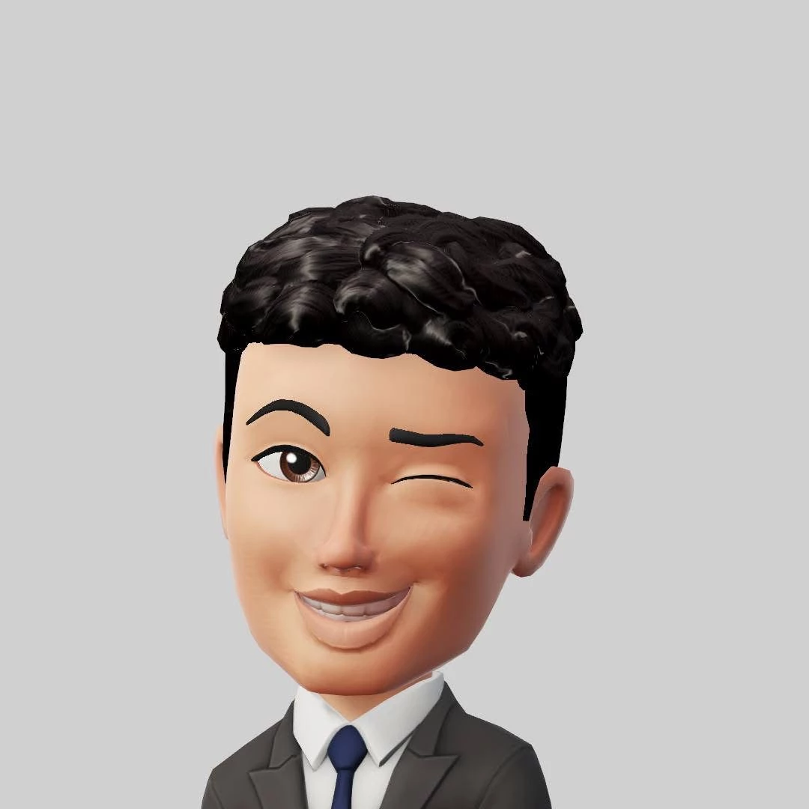

Om mig

Jag heter Siem Teaghes Ogubay och är 28 år. Jag studerar Fullstack .NET (termin 2) och har ett stort intresse för webbutveckling och programmering.
Under min utbildning har jag fått kunskaper inom HTML, CSS, JavaScript samt backend-utveckling med .NET. Jag tycker om att bygga användarvänliga och strukturerade webbplatser.
Jag har tidigare arbetat som IT-assistent och lärarassistent, vilket har gett mig erfarenhet av service, samarbete och att förklara tekniska lösningar på ett tydligt sätt.
Jag är en målmedveten och engagerad individ som strävar efter att utvecklas inom system- och webbutveckling.